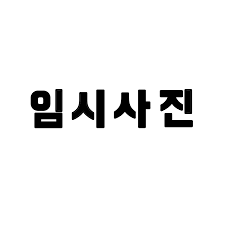
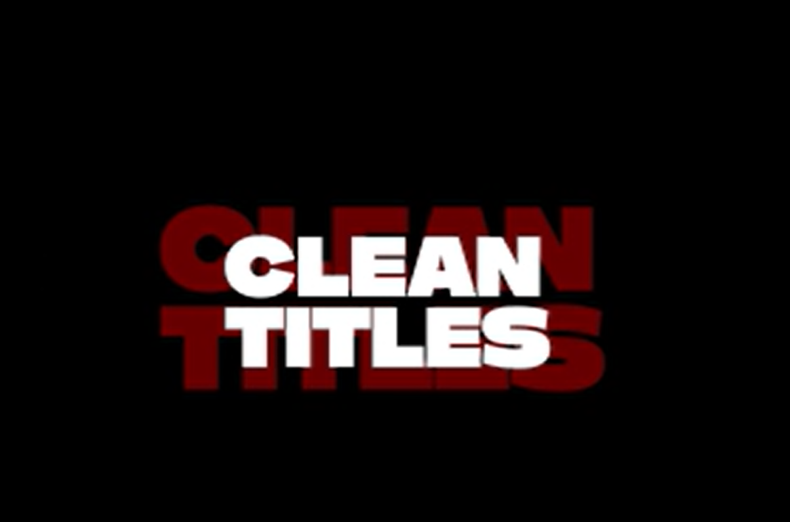

학교생활:
마라툰: 2일동안 웹툰을 그리면서 다양한 체험을 해보고 견문을 넓혀가는 활동입니다.
관련영상 보러가기
한빛제: 2일동안 음식이나 체험 부스를 운영하여 학생들이 주도적으로 직접 계획과 실행을 하여 이익을 얻는 활동입니다.


선데이 영상 제작부: 학생들이 주도적으로 UCC공모전을 찾아보아서 영상을 제작하고, 제작하는 법을 배우는 동아리입니다.


부전공 (방송 콘텐츠): 촬영 실습, 프리미어 프로, 애프터 이펙트 등 영상을 만드는 과정과 관련 기능 등을 배우는 활동입니다.


부전공 (광고 콘텐츠): 광고, 마케팅 등 사람들의 눈을 사로잡는 디자인을 만드는 법 등을 배우는 활동입니다.

수학여행: 제주도의 역사를 알아보고 그간 공부로 받은 스트레스를 다양한 체험으로 푸는 여행이였습니다.
체육 한마당: 학급끼리 줄다리기, 달리기 등을 겨루어 각 학급끼리 서로 응원해가며 더욱 더 친해질 수 있는 활동이였습니다.
학급 단합회: 학급끼리 모여서 재미있는 프로그램을 하며 단합하는 활동입니다.


건강 체육 교실: 아침마다 간단히 몸을 풀어주는 활동입니다.
굿즈 만들기
또래 멘토링: 4~5명의 팀을 짜서 관심있는 주제로 탐구를 하는 활동입니다.


소규모테마형교육여행
문학 데이트 수행평가: 랜덤으로 2명을 짝지어서 서로의 장점을 알아보며, 그것으로 친구를 소개하는 글을 쓰는 활동입니다.
백일장: 시와 소설을 주제에 맞춰서 쓰는 대회입니다.
방과후 활동: 영어 기초 방과후, 파워포인트 방과후, 포토샵 방과후, 엑셀 방과후, 기초회계 방과후, fat2급 방과후, aice basic 방과후 등을 참여하였습니다.
특강 보기: acp 프리미어 특강, 마케팅 특강, 쇼핑 라이브 특강, 졸업생 특강등을 참여하였습니다.